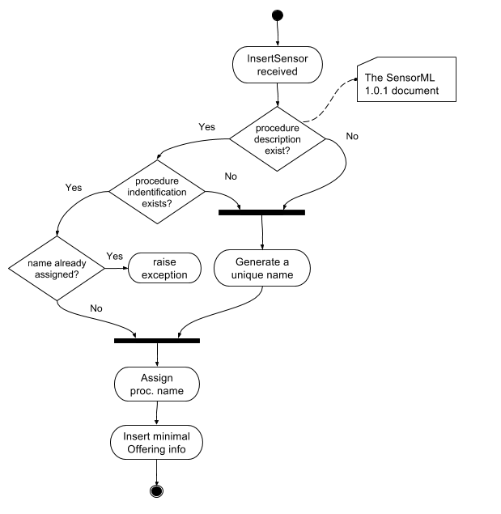

With regards to the OGC SOS 2.0.0 Transactional Extension istSOS supports the insertSensor request. The database will be created on the go. During an InsertSensor the minimal info will be stored. Later when the InsertObservation will be done, the rest of the data store will be built.
Offering name
Note
According to the OGC SWES [OGC 09-001] on each InsertSensor request a new Offering shall be created (OGC 09-001, REQ 49). IstSOS will generate a unique identifier.
Procedure name
The procedure name can be assigned to a new sensor by setting the identifier (uniqueID) in the SensorML of the procedureDescription.
Note
According to the OGC SWES [OGC 09-001], on each InsertSensor request istSOS will assign an auto generated name if a procedure identifier is not defined within the SensorML (OGC 09-001, REQ 50).
Observed properties
Note
The outputs defined within the SensorML are not used to initialize the new offerings. According to the OGC SensorML Implementation Specification [OGC 07-000], SensorML is not intended to provide the framework for encoding the actual observation values. Within the SWE framework, the actual observation results should be encoded and transmitted within an O&M Observation instance or as a TML data stream. (OGC 07-000, 8.12.2).
Flow chart
Examples
Here an example on how manually register a new sensor using Python 3.
import asyncio
from istsos.application import Server
from istsos.entity.httpRequest import HttpRequest
from istsos.actions.sos_2_0_0.insertSensorOp import InsertSensor
@asyncio.coroutine
def execute():
with open('examples/xml/insertSensor-1.xml') as xml_file:
# Installation of the istSOS server
server = yield from Server.create()
# Preparing the Request object
request = HttpRequest(
"POST",
"sos",
body=xml_file.read(),
content_type="application/xml"
)
response = yield from server.execute_http_request(
request, stats=True
)
loop = asyncio.get_event_loop()
loop.run_until_complete(
asyncio.gather(execute())
)
loop.close()